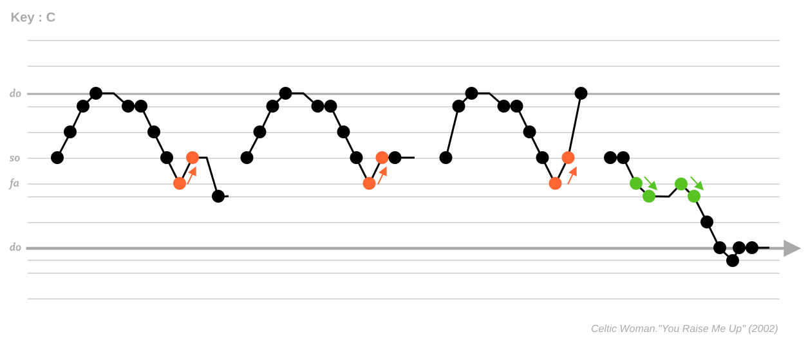

本文中的“Do、Re、Mi、Fa、Sol、La、Ti”，均作为上一讲所阐述的“首调阶名”使用。例如在 G 大调中，调性中心 G 音被唱作“Do”。这一原则在后续的所有文章中均完全一致。
 1. 全音进行与半音进行
1. 全音进行与半音进行
如果将“级进”进一步向深层次拆解，可以精准细分为差进行的级进与差进行的级进。

在自然大调与自然小调音阶中，只有 Do ⇔ Ti 与 Mi ⇔ Fa 之间是半音关系。因此，同为级进，本质上可以划分为“全音进行”与“半音进行”。 基于上一讲“物理移动幅度越大，旋律所赋予的听觉印象越从温和平缓走向激烈跳跃”的逻辑：全音进行相对而言更具刚劲挺拔的明快感，而半音进行则更为平滑、柔顺与细腻。 换言之，Do ⇔ Ti 与 Mi ⇔ Fa 在整条音阶中占据着极其特殊的地位，蕴含着不同于全音进行的独特情绪张力。

善于捕捉并驾驭这种半音进行所特有的声学质感，是旋律构思中的核心王牌。
2. Ti → Do 的“解决”
首先聚焦于 Do 与 Ti 的关系：这两者绝非平起平坐的对等关系。正如在中心音一讲中所见，Do 承担着全曲引力中心与终极着陆点的职能，是旋律线条无可争议的“终点线”。而 Ti 在音阶中距离 Do 仅有一步之遥（半音音程），可以说正处于“冲线前夕”的最前线。 正因如此，“Ti → Do”这一动势构成了最顺滑、最踏实的旋律收束形态，在旋律表达中具有举足轻重的分量。尤其在传统古典音乐中，以这种形态为旋律画上句号是绝对的核心定式；在某些和声语境下，甚至被奉为必须严格遵守的铁律。 Do 执掌着音乐中的“安定与沉着”；由此衍生而来，传统乐理将与之相邻的 Ti 音定性为“不安定（Unstable）”[73]。

在上一讲关于音名探讨中，我们曾提到 Do 被称为“主音”，而 Ti 被称为“导音”。所谓“导音”，其命名本意正是因为它具备将旋律强力“引导演进至 Do”的迫切动能[74]。 这种从“不稳定 → 稳定”的运动，正是音乐中经典的**“紧张与释放（Tension & Release）”。先激起一丝悬念与波澜，随后稳稳回归安全舒适的避风港，听众由此获得巨大的心理满足感。在时间艺术的音乐中，这是把控情绪张弛起伏的最底层核心动作，乐理中将这种状态转换严谨地表述为解决（Resolution）**。
解决 (Resolution) : 处于不稳定状态的音符所激发的紧张感，通过向相邻更稳定的音符进行而得以消解并落定的物理与心理过程。 : 在和弦理论中，“不协和和弦向协和和弦过渡”同样沿用此词。动词形式为“Resolve”。
在汉语日常口语中，“解决”多用于“解决问题”“解决困难”，但在音乐理论的世界里，“解决”是一个无处不在的基础日常核心术语。本讲我们将重点聚焦于从 Ti 走向 Do 的这一“解决”运动。
Ti → Do 的实战范例
Ti → Do 的解决绝不仅是古典大师的专利，在现当代流行音乐中，无论曲风复古还是前沿，它都活跃在无数名曲的高光时刻。
ABBA – Dancing Queen
瑞典国宝级流行传奇 ABBA 的传世之作《Dancing Queen》。全曲为 A 大调，按首调唱名排布如下：

因此，本曲中的“Ti → Do”解决，在绝对物理音名上对应的是“G♯ → A”的半音上行。 在副歌开篇的“You are the dancing queen…”处，旋律线条呈现为“Sol - La - Ti Ti - Do Do—”。这是一段极其抓耳且通透的旋律：通过“Sol → La → Ti”顺着音阶步步攀升，凭借这股冲劲，听众在心理上对“下一步必将稳稳落入 Do”的期待被推向顶峰。紧接着，旋律如期踏上 Do 音并唱响全曲歌名“Dancing Queen”！完全顺应听觉心理预期的定式操作，铸就了极其洗脑、老少咸宜的大众流行金曲。 乐句末尾这一“Ti - Do Do—”直接被确立为副歌的核心动机，贯穿始终反复回响。配合轻快舒展的节奏与明朗的大调和声，将洋溢着幸福欢乐的音乐意境烘托得淋漓尽致。
Spitz – スワン（天鹅）
Spitz 于 2013 年发布的经典单曲《天鹅》（スワン）为 E 大调[75]。副歌开篇“君は光（你是光芒）”一句，旋律线条为“Sol - La - Ti Ti— Do Do—”。令人惊叹的是：除去节奏细节的微调，其音级落点与 37 年前的《Dancing Queen》完全如出一辙！ 两首作品相隔近四十年，其间编曲潮流与音乐流派经历了翻天覆地的迭代洗牌。然而，人类对旋律底层美感的基本生理感知，却始终稳如磐石。 更不可思议的是：在这段副歌中，每一个小乐句的收尾全部无一例外由 Ti → Do 的解决画上句号。即便不做任何繁复前卫的偏门操作，只要深刻参透了“Ti → Do”这一基础线条中所蕴藏的声学心理力量，就足以构筑出摄人心魄的传世乐章。 与《Dancing Queen》相比，本曲的和弦色彩更为深沉幽暗，整体流淌着淡淡的感伤与寂寥。而旋律中不断消解不稳定的“Ti → Do”，与这种略带忧郁的和声底色交织碰撞，恰如其分地托起了“永不熄灭的微光”这一细腻而坚韧的深刻主题。
3. Fa → Mi 的“解决”
那么，自然大调音阶中的另一组半音搭档——Mi ⇔ Fa 又是怎样的光景呢？ 在原则上，Mi 承担着“稳定”的角色，而 Fa 扮演着“不稳定”的角色，因此**“Fa → Mi”的半音下行构成了旋律中另一大经典的“解决”路径**[76]。

虽然 Mi 音在调性中并不具备如同主音 Do 那般绝对统治级的终局稳定感，但通过“Fa → Mi”的步法，依然能够精准塑造出一波从紧张到舒缓的心理抚慰。
Fa → Mi 的实战特征
若将“Fa → Mi”与刚才的“Ti → Do”进行横向对比，其显著特征包括：
- 终点音 Mi 带来的是温暖的抚慰，但不会像 Do 那样彻底终结整个乐段。
- 终点音 Mi 在空间音高概念上高于 Do（处于主音上方三度）。
- 与 Ti → Do 的“上行解决”相反，Fa → Mi 必须通过“下行”来完成解决。
稳定性稍逊，但占据了更高位置；并且是顺应重力下行回落。这些特征在实际旋律塑造中会擦出怎样的火花？我们来看两首极具个性的代表作：
Mr.Children – くるみ（KURUMI）
以 C 大调展开的传世名曲《KURUMI》，全曲通篇浸润在“Fa → Mi”解决的浓郁氛围中。 在主歌部分，“映るの？”“しまうんだ”等最扣人心弦、最触动心弦的揪心乐句，均精准落位在“Fa → Mi”的半音解决上。 到了主歌末尾的“いい”处，旋律悬挂在悬而未决的 Fa 音上，以极度不稳定的悬念姿态撞入副歌；紧接着在副歌首句“良かったこと”处，以一声舒缓的“Fa → Mi”完成抚慰化解！随后，“思い出して”“やけに”“気持ちになる”等乐句高频接连轰炸“Fa → Mi”，构成了贯穿始终的微型动机；乃至最终副歌落幕的“みるんだよ”处，再次以经典的“Fa → Mi”画上感叹号。从头到尾，整首作品的催泪魅力几乎全维建立在“Fa → Mi”这一声学动作的极致抚慰之上。
Radiohead – Idioteque
曲风骤然转向阴郁前卫，这是一首基于 G 小调构建的作品[77]。开篇人声唱响“Who’s in a bunker?”便立刻展示了神经质的“Fa → Mi”晃动，并在后文以极高频率反复盘旋。旋律在不稳定与稳定之间神经质般眩晕切换，极大地烘托了整首歌神经紧绷、情绪极不稳定的冷酷末世氛围。 同为从不稳定到稳定的半音解决：Ti → Do 承担着为乐句画上句点、定乾坤的“收束终结”使命；而 Fa → Mi 则更擅长勾勒内心深处的脆弱波澜、摇曳与情绪倾诉。
在极其注重旋律细腻情感叙事的 J-Pop 抒情曲（Ballad）中，能否神乎其技地穿插调度这两个半音组件，往往是决定作品能否直击听众泪腺的胜负手。
4. 倾向性（Tendency）与倾向音
相较于稳定从容的 Do 与 Mi 可以自由随性地飞向任何音符，处于不稳定状态的 Ti 与 Fa，为了消解自身的紧张感，往往在潜意识中将“走向半音相邻的稳定邻居”列为绝对优先的第一选择。 加之无论是在声乐唱诵、吉他按弦还是钢琴演奏中，半音相邻的物理间距极小，极易被连贯演奏。受限于这种生理与声学双重机制，在商业音乐宝库中，即便创作者完全不理会任何古典禁忌教条，也能发现大量整首歌曲中出现的所有 Ti 和 Fa 无一例外全部分别解决到 Do 和 Mi 上的惊人案例[78]。 用拟人化的修辞来形容：这些音符仿佛被某种看不见的力量牢牢“牵引着”“吸引着”“引导着”奔向其宿命的归宿。在音乐理论发展史中，将音符之间的相互作用类比为引力、重力或磁场力学的思潮源远流长，“导音”的命名正是这种思想的生动投射。 像 Ti 和 Fa 这类音符，其走向具备明确的偏向性。乐理中将这种音符所具备的特定行进偏向，严谨地定义为 Tendency（倾向性 / 倾向）[79]；而具有这种鲜明偏向特质的音符，则被称为 Tendency Tone（倾向音）。
- Tendency = 倾向性 / 倾向
- Tendency Tone = 倾向音
我们可以表述为：“该音具备极强的倾向性”，“Ti 是具备向上方 Do 解决倾向的强倾向音”。
倾向性 (Tendency) : 某个音符由于自身处于不稳定音响状态，因而不易长时间独立驻留，而是具备强烈向特定稳定音级行进并完成解决的固有心理趋势与张力强度[80]。
倾向音 (Tendency Tone) : 在调性体系中蕴含着显著倾向性动能的音级（尤指自然大调中的 Fa 与 Ti）。
音符“处于不稳定状态”且“拥有明确的去向预期”，这两大属性交织在一起，赋予了旋律以千变万化的张力。音阶中除 Fa 和 Ti 外，其他音级也各自带有微弱倾向，但远不及这两者尖锐。在自然大调中，首先牢牢把控住 Fa 与 Ti 这两大核心“倾向音”，是进阶旋律高手的关键必修课。

只要在旋律中轻轻点染这两个音，整首曲子的情绪水面立刻就会激起涟漪般的“动荡感”。而这种波澜的强度，取决于倾向音的时值长短、音区高低、强弱拍位置以及前后声部上下文。
5. 违逆倾向性的“破局”艺术
然而，所谓“倾向”自始至终只是一种概率性的心理预期，绝非不可逾越的戒律。旋律特意朝着与预期倾向相反的方向逆行，不仅毫不违和，反而因为打破了听众的潜意识定式，能够释放出震撼的艺术张力。
Fa → Sol 的实战运用
按照倾向性，Fa 本应顺应重力下行回落至 Mi；然而“Fa → Sol”却抗拒引力、毅然决然逆流上扬！这种反叛的动势，极度契合表达逆风挺拔、坚不可摧的顽强意志与正能量爆发。
神曲《You Raise Me Up》（你鼓舞了我）便是逆向驾驭倾向性的神级典范。副歌（1:30 起）开篇唱响主题词“You raise me up”时，旋律采用朴素的顺畅级进上行“Sol - La - Ti - Do—”，规整地顺应了 Ti → Do 的倾向。 然而紧接着，旋律顺级下行“Ti - La - Sol - Fa”，按照常规心理预期，下一步理应顺理成章跌入 Mi 完成落地；不料乐句在此处骤然调头折返，逆流向上反扑回 Sol！副歌连续三次进行了这种“Sol → Fa → Sol”的逆向 U 型回转冲刺，直到第四次终盘，才温柔地顺应规律走向“Fa → Mi”完成着陆抚慰。


顺应 Ti → Do 的上扬，违逆 Fa → Mi 的下坠。一路顺着台阶走下来，却在最容易跌落的 Mi 面前傲然拔高折返——正是这记字面意义上的“Raise Up（托起、拔高）”，将歌曲所要传递的崇高信念与被神明/挚爱从泥沼中托举向天空的宏大意境诠释得入木三分。
Ti → La 的实战运用
与 Fa → Sol 相对，“Ti → La”则是通过下行违逆倾向。明明距离光明的终点线 Do 仅有半音之遥，却功亏一篑、无力回天地下坠滑落——这种形态在音乐心理学中被公认为能催生极度揪心的深切凄美与苍凉无力感[81]。
满岛光主演的名作《Labyrinth》（迷宫）中，“Ti → La”的笔触极具辨识度。前半段唱到“悲しい方を”“迷宮のパラダイス”时，旋律均绝望地下挫为“Ti → La”，勾勒出如坠深渊、彷徨无助的迷离宿命感。试想如果此处像《Dancing Queen》那样欢快地向上解决到 Do，整首歌那种清冷迷幻的迷宫意境瞬间便会荡然无存。
在传统古典乐理体系中，在特定声部进行规则下往往严厉禁止违背倾向音的解决，但那终究只是特定历史时期的风格套路。在当代自由派音乐创作中，深刻领悟“顺应定式”与“违逆定式”各自所诱发的深层听觉意象，并能根据艺术表达需要自如切换调度，才是真正高段位的硬核本领。
总结
- 半音级进的旋律温润柔滑，全音级进的旋律则更加刚劲硬朗。
- 在自然大调中，Fa 走向 Mi、Ti 走向 Do 能带来极其自然的安宁抚慰感。这种单向性的解决趋势被称为倾向性（Tendency），具备强烈倾向的音符被称为倾向音（Tendency Tone）。
- 逆向违背倾向性的线条（如“Fa → Sol”或“Ti → La”），只要运用得当，能够塑造出极具戏剧张力的高级艺术意境。